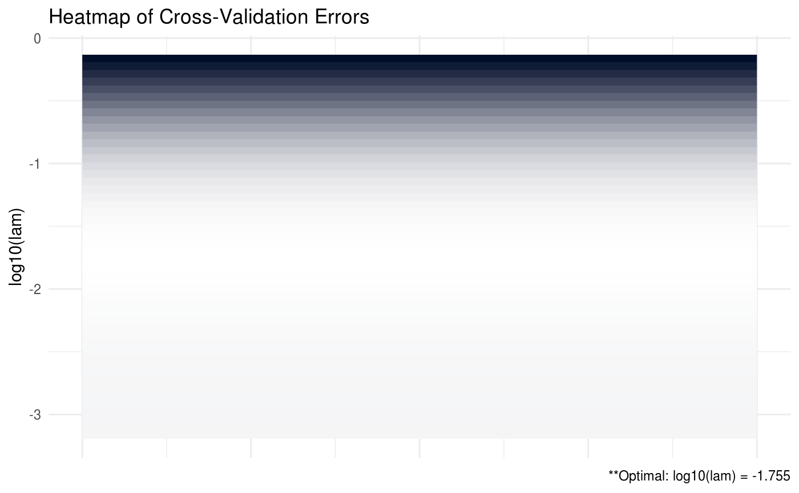
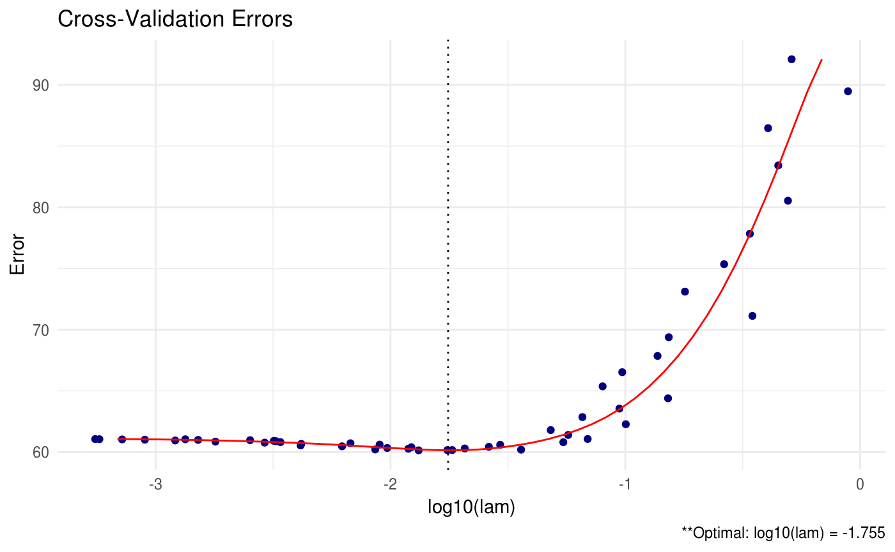

In many statistical applications, estimating the covariance for a set of random variables is a critical task. Unfortunately, estimating \(\Sigma\) well is often expensive and, in a few settings, extremely challenging. For this reason, emphasis in the literature and elsewhere has been placed on estimating the inverse of \(\Sigma\) which we like to denote as \(\Omega \equiv \Sigma^{-1}\).
If we have data that is normally distributed with mean \(\mu\) and variance \(\Sigma\) (that is, \(X_{i} \sim N_{p}\left(\mu, \Sigma \right)\)), the optimal estimator for \(\Omega\) with respect to the log-likelihood is of the form
\[ \hat{\Omega}_{MLE} = \arg\min_{\Omega \in S_{+}^{p}}\left\{ tr\left(S\Omega\right) - \log\left|\Omega\right| \right\} \]
where \(S\) denotes the usual sample estimator (\(S = \sum_{i = 1}^{n}\left(X_{i} - \bar{X} \right)\left(X_{i} - \bar{X} \right)^{T})\)). As in regression settings, we can construct penalized log-likelihood estimators by adding a penalty term, \(P\left(\Omega\right)\), to the log-likelihood so that
\[ \hat{\Omega} = \arg\min_{\Omega \in S_{+}^{p}}\left\{ tr\left(S\Omega\right) - \log\left|\Omega \right| + P\left( \Omega \right) \right\} \]
\(P\left( \Omega \right)\) is often of the form \(P\left(\Omega \right) = \lambda\|\Omega \|_{F}^{2}/2\) or \(P\left(\Omega \right) = \|\Omega\|_{1}\) where \(\lambda > 0\), \(\left\|\cdot \right\|_{F}^{2}\) is the Frobenius norm and we define \(\left\|A \right\|_{1} = \sum_{i, j} \left| A_{ij} \right|\). These penalties are the ridge and lasso, respectively. The penalty proposed in Molstad and Rothman (2017), however, is of the form \(P\left(\Omega\right) = \left\|A\Omega B - C\right\|_{1}\) so that the general optimization problem is
\[\begin{align} \hat{\Omega} = \arg\min_{\Omega \in \mathbb{S}_{+}^{p}}\left\{ tr(S\Omega) - \log\left| \Omega \right| + \lambda\left\| A\Omega B - C \right\|_{1} \right\} \end{align}\]
SCPME is an implementation of the proposed augmented ADMM algorithm in Molstad and Rothman (2017) for solving the previous optimization problem. In addition, this package places a big emphasis on flexibility that allows for rapid experimentation for the end user.
We will illustrate this with a short simulation and show some of the new and interesting estimators for \(\Omega\) that are a result of this penalty.
Let us generate some data. For this example, we will assume
\[ Y_{i} = \mu_{y} + \beta^{T}\left(X_{i} - \mu_{x}\right) + E_{i} \]
where \(E_{i} \sim N_{r}\left( 0, \Omega_{y | x}^{-1} \right)\), \(X_{i} \sim N_{p}\left( \mu_{x}, \Omega^{-1} \right)\) and we are interested in estimating the marginal precision matrix of \(X\) (denoted \(\Omega\)).
library(SCPME)
set.seed(123)
# generate data from a sparse oracle precision matrix.
# we can use the built-in `data_gen` function
# generate 100 x 5 X data matrix and 100 x 1 Y data matrix
data = data_gen(p = 5, n = 100, r = 1)
# the default regression coefficients are sparse
data$betas## [,1]
## [1,] -0.25065233
## [2,] 0.00000000
## [3,] 0.69707555
## [4,] 0.03153231
## [5,] 0.00000000## [,1] [,2] [,3] [,4] [,5]
## [1,] 1.96078 -1.37255 0.00000 0.00000 0.00000
## [2,] -1.37255 2.92157 -1.37255 0.00000 0.00000
## [3,] 0.00000 -1.37255 2.92157 -1.37255 0.00000
## [4,] 0.00000 0.00000 -1.37255 2.92157 -1.37255
## [5,] 0.00000 0.00000 0.00000 -1.37255 1.96078## [,1] [,2] [,3] [,4] [,5]
## [1,] 1.1952948 0.6283794 -0.27324390 0.2400922 -0.7296045
## [2,] -1.7420699 -0.9499532 -0.77653371 -0.1923880 -1.0364437
## [3,] 1.4884219 0.8648877 -1.37448545 -1.5880668 -0.5314990
## [4,] 1.2264760 1.9445153 1.25375134 1.2658125 0.2352873
## [5,] 2.5151054 1.3458010 0.57675219 0.7688747 2.1911351
## [6,] 0.3277334 -0.1521037 -0.09255265 -0.6744002 -1.3551462## [,1]
## [1,] 0.4089913
## [2,] 0.7387282
## [3,] 0.2296328
## [4,] 0.6617543
## [5,] 1.0012637
## [6,] -1.9142132We have generated 100 samples of the random variable \(X \in \mathbb{R}^{5}\) and 100 samples of the random variable \(Y \in \mathbb{R}\). It turns out that this particular oracle covariance matrix for \(X\) (tapered matrix) has an inverse that is sparse (tri-diagonal). That is, the precision matrix has many zeros.
## [,1] [,2] [,3] [,4] [,5]
## [1,] 1.0000 0.700 0.49 0.343 0.2401
## [2,] 0.7000 1.000 0.70 0.490 0.3430
## [3,] 0.4900 0.700 1.00 0.700 0.4900
## [4,] 0.3430 0.490 0.70 1.000 0.7000
## [5,] 0.2401 0.343 0.49 0.700 1.0000## [,1] [,2] [,3] [,4] [,5]
## [1,] 1.96078 -1.37255 0.00000 0.00000 0.00000
## [2,] -1.37255 2.92157 -1.37255 0.00000 0.00000
## [3,] 0.00000 -1.37255 2.92157 -1.37255 0.00000
## [4,] 0.00000 0.00000 -1.37255 2.92157 -1.37255
## [5,] 0.00000 0.00000 0.00000 -1.37255 1.96078In this particular setting, we could estimate \(\Omega\) by taking the inverse of the sample covariance matrix \(\hat{S} = \sum_{i = 1}^{n}(X_{i} - \bar{X})(X_{i} - \bar{X})^{T}/n\):
# print inverse of sample precision matrix (perhaps a bad estimate)
round(qr.solve(cov(data$X)*(nrow(data$X) - 1)/nrow(data$X)), 5)## [,1] [,2] [,3] [,4] [,5]
## [1,] 2.20420 -1.24670 -0.12435 -0.02156 -0.20889
## [2,] -1.24670 2.39120 -0.90434 0.09653 -0.04804
## [3,] -0.12435 -0.90434 2.61482 -1.62774 0.14684
## [4,] -0.02156 0.09653 -1.62774 3.38677 -1.75151
## [5,] -0.20889 -0.04804 0.14684 -1.75151 2.36464However, because \(\Omega\) is sparse, this estimator will likely perform very poorly. Notice the number of zeros in our oracle precision matrix compared to the inverse of the sample covariance matrix. Instead, we will use SCPME to estimate \(\Omega\).
By default, SCPME will estimate \(\Omega\) using a lasso penalty (\(A = I_{p}, B = I_{p}, \mbox{ and } C = 0\)) and choose the optimal lam tuning parameter that minimizes the mean squared prediction error for the regression of the variable \(Y\) on \(X\).
##
## Call: shrink(X = data$X, Y = data$Y)
##
## Iterations: 37
##
## Tuning parameters:
## log10(lam) lam
## [1,] -1.163 0.069
##
## Log-likelihood: -178.20154
##
## Omega:
## [,1] [,2] [,3] [,4] [,5]
## [1,] 1.60847 -0.73553 -0.14094 -0.04329 -0.11730
## [2,] -0.73553 1.66045 -0.52579 -0.03576 -0.03342
## [3,] -0.14094 -0.52579 1.73410 -0.85121 -0.07332
## [4,] -0.04329 -0.03576 -0.85121 2.02541 -0.93612
## [5,] -0.11730 -0.03342 -0.07332 -0.93612 1.62397However, we could also select the optimal tuning parameter based on other criteria, such as log-likelihood. Other options include: AIC, BIC, and penalized log-likelihood (penloglik).
##
## Call: shrink(X = data$X, Y = data$Y, crit.cv = "loglik")
##
## Iterations: 51
##
## Tuning parameters:
## log10(lam) lam
## [1,] -2.163 0.007
##
## Log-likelihood: -120.02858
##
## Omega:
## [,1] [,2] [,3] [,4] [,5]
## [1,] 2.11926 -1.17294 -0.13784 -0.00678 -0.20014
## [2,] -1.17294 2.28420 -0.81629 0.00009 -0.00001
## [3,] -0.13784 -0.81629 2.45520 -1.42117 0.01650
## [4,] -0.00678 0.00009 -1.42117 3.09526 -1.56839
## [5,] -0.20014 -0.00001 0.01650 -1.56839 2.24703SCPME also has the capability to provide plots for the cross validation errors. In the heatmap plot below, the more bright (white) areas of the heat map correspond to a better tuning parameter selection.
# produce CV heat map
shrink = shrink(X = data$X, nlam = 50, crit.cv = "BIC")
plot(shrink, type = "heatmap")
Note that in the previous plot, it is not necessary to provide the \(Y\) data matrix because neither the penalty nor the cross validation criteria depends on the values of \(Y\).
We can also produce a line graph of the cross validation errors:

We also have the option to print all of the estimated precision matrices for each tuning parameter using the path option. This option should be used with extreme care when the dimension and sample size is large – you may run into memory issues.
# keep all estimates using path
shrink = shrink(X = data$X, crit.cv = "loglik", path = TRUE)
# print only first three objects
shrink$Path[,,1:3]## , , 1
##
## [,1] [,2] [,3] [,4] [,5]
## [1,] 2.19543530 -1.23889959 -0.1271551 -0.01682895 -0.21009482
## [2,] -1.23889959 2.37914630 -0.8914841 0.07898398 -0.03816845
## [3,] -0.12715507 -0.89148407 2.5931517 -1.59916427 0.12892500
## [4,] -0.01682895 0.07898398 -1.5991643 3.34883645 -1.72795124
## [5,] -0.21009482 -0.03816845 0.1289250 -1.72795124 2.34972956
##
## , , 2
##
## [,1] [,2] [,3] [,4] [,5]
## [1,] 2.18478579 -1.23000041 -0.1292381 -0.01274449 -0.2106575
## [2,] -1.23000041 2.36658349 -0.8803800 0.06396425 -0.0297196
## [3,] -0.12923808 -0.88037999 2.5773851 -1.57991498 0.1159757
## [4,] -0.01274449 0.06396425 -1.5799150 3.32563221 -1.7124030
## [5,] -0.21065749 -0.02971960 0.1159757 -1.71240305 2.3391038
##
## , , 3
##
## [,1] [,2] [,3] [,4] [,5]
## [1,] 2.164172415 -1.211739989 -0.13561589 -0.002034714 -0.213142034
## [2,] -1.211739989 2.339429494 -0.85304014 0.027076850 -0.009253626
## [3,] -0.135615886 -0.853040140 2.53351655 -1.523234253 0.080310543
## [4,] -0.002034714 0.027076850 -1.52323425 3.251973536 -1.666506825
## [5,] -0.213142034 -0.009253626 0.08031054 -1.666506825 2.309830670Recall that all of the estimators so far have used a lasso penalty that penalizes the sum of the absolute value of all the entries in \(\Omega\). In effect, this penalty embeds an assumption in our estimate that the true \(\Omega\) is sparse.
The flexibility of the penalty described in Molstad and Rothman (2017) allows us to make other assumptions as well. For instance, in the penalty we could set \(A = I_{p}, B = \Sigma_{xy}\) where \(\Sigma_{xy}\) is the covariance matrix of \(X\) and \(Y\), and \(C = 0\). In which case
\[P_{\lambda}\left(\Omega \right) = \lambda\left\| A\Omega B - C \right\|_{1} = \lambda\left\| \Omega\Sigma_{xy} \right\|_{1} = \lambda\left\| \beta \right\|_{1} \]
This objective function estimates an \(\Omega\) via the marginal log-likelihood of \(X\) under the assumption that the forward regression coefficient \(\beta\) is sparse (recall that \(\beta \equiv \Omega\Sigma_{xy}\)). Of course, we do not know the true covariance matrix \(\Sigma_{xy}\) but we could use the sample estimate instead.
# assume sparsity in beta
lam_max = max(abs(crossprod(data$X, data$Y)))
(shrink = shrink(X = data$X, Y = data$Y, B = cov(data$X, data$Y), lam.max = lam_max, nlam = 20))##
## Call: shrink(X = data$X, Y = data$Y, B = cov(data$X, data$Y), nlam = 20,
## lam.max = lam_max)
##
## Iterations: 84
##
## Tuning parameters:
## log10(lam) lam
## [1,] -0.167 0.681
##
## Log-likelihood: -133.98097
##
## Omega:
## [,1] [,2] [,3] [,4] [,5]
## [1,] 2.12467 -1.20016 -0.01149 0.01660 -0.20424
## [2,] -1.20016 2.28202 -0.70370 0.03047 -0.01211
## [3,] -0.01149 -0.70370 2.09284 -1.47505 0.01020
## [4,] 0.01660 0.03047 -1.47505 2.86829 -1.45784
## [5,] -0.20424 -0.01211 0.01020 -1.45784 2.18752Note that we specified the maximum lam value in the previous function to expand the tuning parameter grid.
Conveniently, with these settings, the augmented ADMM algorithm also solves for the estimated \(\beta\) coefficient matrix simultaneously:
## [,1]
## [1,] 0.00000000
## [2,] 0.00000000
## [3,] 0.42221120
## [4,] 0.04782093
## [5,] 0.00000000Another possible penalty is to set \(B = \left[ \Sigma_{xy}, I_{p} \right]\) so that the identity matrix (dimension \(p\)) is appended to the covariance matrix of \(X\) and \(Y\).
\[ P_{\lambda}\left(\Omega \right) = \lambda\left\| A\Omega B - C \right\|_{1} = \lambda\left\| \Omega\left[\Sigma_{xy}, I_{p}\right] \right\|_{1} = \lambda\left\| \beta \right\|_{1} + \lambda\left\| \Omega \right\|_{1} \]
In this case, not only are we assuming that \(\beta\) is sparse, but we are also assuming sparsity in \(\Omega\).
# assume sparsity in beta AND omega
(shrink = shrink(X = data$X, Y = data$Y, B = cbind(cov(data$X, data$Y), diag(ncol(data$X))), lam.max = 10, lam.min.ratio = 1e-4, nlam = 20))##
## Call: shrink(X = data$X, Y = data$Y, B = cbind(cov(data$X, data$Y),
## diag(ncol(data$X))), nlam = 20, lam.max = 10, lam.min.ratio = 1e-04)
##
## Iterations: 31
##
## Tuning parameters:
## log10(lam) lam
## [1,] -0.684 0.207
##
## Log-likelihood: -267.31073
##
## Omega:
## [,1] [,2] [,3] [,4] [,5]
## [1,] 1.09086 -0.34708 -0.12033 -0.04611 -0.04621
## [2,] -0.34708 1.07196 -0.27895 -0.06526 -0.02562
## [3,] -0.12033 -0.27895 1.06681 -0.41038 -0.12078
## [4,] -0.04611 -0.06526 -0.41038 1.15921 -0.44333
## [5,] -0.04621 -0.02562 -0.12078 -0.44333 1.05342## [,1]
## [1,] 0.00000000
## [2,] 0.03332707
## [3,] 0.37463383
## [4,] 0.18450103
## [5,] 0.07200722A huge issue in precision matrix estimation is the computational complexity when the sample size and dimension of our data is particularly large. There are a number of built-in options in SCPME that can be used to improve computation speed:
lam values during cross validation. The default number is 10.K folds during cross validation. The default number is 5.tol.abs and tol.rel options. The default for each is 1e-4.# relax convergence criteria
shrink = shrink(X = data$X, Y = data$Y, tol.abs = 1e-3, tol.rel = 1e-3)adjmaxit. This allows the user to adjust the maximum number of iterations after the first lam tuning parameter has fully converged during cross validation. This allows for one-step estimators and can greatly reduce the time required for the cross validation procedure while still choosing near-optimal tuning parameters.